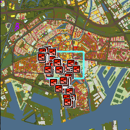
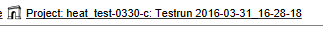
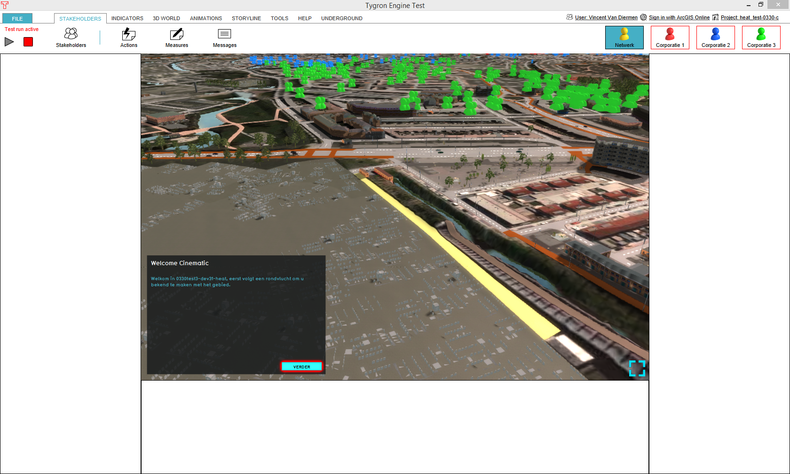
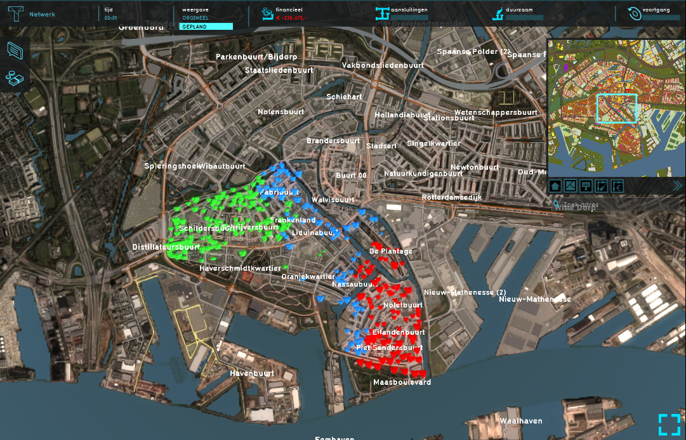
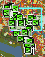
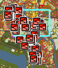

#Use on project Heat test-0330-c only!!! import logging;reload(logging) FORMAT="%(asctime)-8s %(message)s" logging.basicConfig(format=FORMAT, filename="test.log", level=logging.DEBUG) #logging.info("=====[START] HEAT timing test=====") logging.info("[info] Start HEAT timing test run...") hover() click() waittime = 0.5 for x in range(0, 240): if exists(, waittime): print("[success] Stakeholder switched in %d seconds!" % (x*waittime)) logging.info("[success] Stakeholder switched in %d seconds!" % (x*waittime)) break else: print("[error] Can't verify Stakeholder switch!") logging.error("[error] Can't verify Stakeholder switch!") exit(1) click() waittime = 1 for x in range(0, 300): if exists(, waittime): print '[success] Starting testrun in %d seconds' % (x*waittime) logging.info('[success] Starting testrun in %d seconds' % (x*waittime)) break #else: #print("[error] Test run did not start in %d seconds!" % (x*waittime)) #logging.error("[error] Test run did not start in %d seconds!" % (x*waittime)) #exit(1) #else: #print("[success] Test run started!") #logging.info("[success] Test run started!") click() wait(1) type(Key.SPACE) #wait(1) #click("1459433388524.png") wait(, 15) logging.info("[info] Press Ctrl-Shift-A to flip loads...") type("a",Key.SHIFT+Key.CTRL) for x in range(0,10): if exists(, 1): print '[succes] Loads were flipped in %d seconds' % x break if not exists(, 1): print("[error] Loads were not flipped!") logging.error("[error] Loads were not flipped!") #exit(1) #else: # print("[success] Loads were flipped within acceptable time (10s)!") # logging.info("[success] Loads were flipped within acceptable time (10s)!") for x in range(0,60): if exists(Pattern().similar(0.87), 1): print '[success] Indicators update received in %d seconds' % x logging.info('[success] Indicators update received in %d seconds' % x) break if not exists(Pattern().similar(0.90)): print("[error] Loads were not calculated in time!") logging.error("[error] Loads were not calculated in time!") # exit(1) #else: # print("[success] Loads were calculated within acceptable time (60s)!") # logging.info("[success] Loads were calculated within acceptable time (60s)!") type("a",Key.SHIFT+Key.CTRL) for x in range(0,10): if exists(Pattern().exact(), 1): print '[success] Loads were flipped back in %d seconds' % x logging.info('[success] Loads were flipped back in %d seconds' % x) break if not exists(Pattern().similar(0.95), 1): print("[error] Loads were not flipped back!") logging.error("[error] Loads were not flipped back!") #exit(1) #else: # print("[success] Loads were flipped back within acceptable time (10s)!") # logging.info("[success] Loads were flipped back within acceptable time (10s)!") for x in range(0,60): if exists(Pattern().exact(), 1): print '[success] Indicators update received in %d seconds' % x logging.info('[success] Indicators update received in %d seconds' % x) break if not exists(Pattern().similar(0.88)): print("[error] Loads were not calculated in time!") logging.error("[error] Loads were not calculated in time!") #exit(1) #else: # print("[success] Loads were calculated within acceptable time (60s)!") # logging.info("[success] Loads were calculated within acceptable time (60s)!") sleep(2) type("a",Key.SHIFT+Key.CTRL) for x in range(0,10): if exists(, 1): print '[succes] Loads were flipped in %d seconds' % x break if not exists(, 1): print("[error] Loads were not flipped!") logging.error("[error] Loads were not flipped!") #exit(1) #else: # print("[success] Loads were flipped within acceptable time (10s)!") # logging.info("[success] Loads were flipped within acceptable time (10s)!") for x in range(0,60): if exists(Pattern().similar(0.87), 1): print '[success] Indicators update received in %d seconds' % x logging.info('[success] Indicators update received in %d seconds' % x) break if not exists(Pattern().similar(0.90)): print("[error] Loads were not calculated in time!") logging.error("[error] Loads were not calculated in time!") # exit(1) #else: # print("[success] Loads were calculated within acceptable time (60s)!") # logging.info("[success] Loads were calculated within acceptable time (60s)!") type("a",Key.SHIFT+Key.CTRL) for x in range(0,10): if exists(Pattern().exact(), 1): print '[success] Loads were flipped back in %d seconds' % x logging.info('[success] Loads were flipped back in %d seconds' % x) break if not exists(Pattern().similar(0.95), 1): print("[error] Loads were not flipped back!") logging.error("[error] Loads were not flipped back!") #exit(1) #else: # print("[success] Loads were flipped back within acceptable time (10s)!") # logging.info("[success] Loads were flipped back within acceptable time (10s)!") for x in range(0,60): if exists(Pattern().exact(), 1): print '[success] Indicators update received in %d seconds' % x logging.info('[success] Indicators update received in %d seconds' % x) break if not exists(Pattern().similar(0.88)): print("[error] Loads were not calculated in time!") logging.error("[error] Loads were not calculated in time!") #exit(1) #else: # print("[success] Loads were calculated within acceptable time (60s)!") # logging.info("[success] Loads were calculated within acceptable time (60s)!") type("a",Key.SHIFT+Key.CTRL) for x in range(0,10): if exists(, 1): print '[succes] Loads were flipped in %d seconds' % x break if not exists(, 1): print("[error] Loads were not flipped!") logging.error("[error] Loads were not flipped!") #exit(1) #else: # print("[success] Loads were flipped within acceptable time (10s)!") # logging.info("[success] Loads were flipped within acceptable time (10s)!") for x in range(0,60): if exists(Pattern().similar(0.87), 1): print '[success] Indicators update received in %d seconds' % x logging.info('[success] Indicators update received in %d seconds' % x) break if not exists(Pattern().similar(0.90)): print("[error] Loads were not calculated in time!") logging.error("[error] Loads were not calculated in time!") # exit(1) #else: # print("[success] Loads were calculated within acceptable time (60s)!") # logging.info("[success] Loads were calculated within acceptable time (60s)!") type("a",Key.SHIFT+Key.CTRL) for x in range(0,10): if exists(Pattern().exact(), 1): print '[success] Loads were flipped back in %d seconds' % x logging.info('[success] Loads were flipped back in %d seconds' % x) break if not exists(Pattern().similar(0.95), 1): print("[error] Loads were not flipped back!") logging.error("[error] Loads were not flipped back!") #exit(1) #else: # print("[success] Loads were flipped back within acceptable time (10s)!") # logging.info("[success] Loads were flipped back within acceptable time (10s)!") for x in range(0,60): if exists(Pattern().exact(), 1): print '[success] Indicators update received in %d seconds' % x logging.info('[success] Indicators update received in %d seconds' % x) break if not exists(Pattern().similar(0.88)): print("[error] Loads were not calculated in time!") logging.error("[error] Loads were not calculated in time!") #exit(1) #else: # print("[success] Loads were calculated within acceptable time (60s)!") # logging.info("[success] Loads were calculated within acceptable time (60s)!") type("a",Key.SHIFT+Key.CTRL) for x in range(0,10): if exists(, 1): print '[succes] Loads were flipped in %d seconds' % x break if not exists(, 1): print("[error] Loads were not flipped!") logging.error("[error] Loads were not flipped!") #exit(1) #else: # print("[success] Loads were flipped within acceptable time (10s)!") # logging.info("[success] Loads were flipped within acceptable time (10s)!") for x in range(0,60): if exists(Pattern().similar(0.87), 1): print '[success] Indicators update received in %d seconds' % x logging.info('[success] Indicators update received in %d seconds' % x) break if not exists(Pattern().similar(0.90)): print("[error] Loads were not calculated in time!") logging.error("[error] Loads were not calculated in time!") # exit(1) #else: # print("[success] Loads were calculated within acceptable time (60s)!") # logging.info("[success] Loads were calculated within acceptable time (60s)!") type("a",Key.SHIFT+Key.CTRL) for x in range(0,10): if exists(Pattern().exact(), 1): print '[success] Loads were flipped back in %d seconds' % x logging.info('[success] Loads were flipped back in %d seconds' % x) break if not exists(Pattern().similar(0.95), 1): print("[error] Loads were not flipped back!") logging.error("[error] Loads were not flipped back!") #exit(1) #else: # print("[success] Loads were flipped back within acceptable time (10s)!") # logging.info("[success] Loads were flipped back within acceptable time (10s)!") for x in range(0,60): if exists(Pattern().exact(), 1): print '[success] Indicators update received in %d seconds' % x logging.info('[success] Indicators update received in %d seconds' % x) break if not exists(Pattern().similar(0.88)): print("[error] Loads were not calculated in time!") logging.error("[error] Loads were not calculated in time!") #exit(1) #else: # print("[success] Loads were calculated within acceptable time (60s)!") # logging.info("[success] Loads were calculated within acceptable time (60s)!") type("a",Key.SHIFT+Key.CTRL) for x in range(0,10): if exists(, 1): print '[succes] Loads were flipped in %d seconds' % x break if not exists(, 1): print("[error] Loads were not flipped!") logging.error("[error] Loads were not flipped!") #exit(1) #else: # print("[success] Loads were flipped within acceptable time (10s)!") # logging.info("[success] Loads were flipped within acceptable time (10s)!") for x in range(0,60): if exists(Pattern().similar(0.87), 1): print '[success] Indicators update received in %d seconds' % x logging.info('[success] Indicators update received in %d seconds' % x) break if not exists(Pattern().similar(0.90)): print("[error] Loads were not calculated in time!") logging.error("[error] Loads were not calculated in time!") # exit(1) #else: # print("[success] Loads were calculated within acceptable time (60s)!") # logging.info("[success] Loads were calculated within acceptable time (60s)!") type("a",Key.SHIFT+Key.CTRL) for x in range(0,10): if exists(Pattern().exact(), 1): print '[success] Loads were flipped back in %d seconds' % x logging.info('[success] Loads were flipped back in %d seconds' % x) break if not exists(Pattern().similar(0.95), 1): print("[error] Loads were not flipped back!") logging.error("[error] Loads were not flipped back!") #exit(1) #else: # print("[success] Loads were flipped back within acceptable time (10s)!") # logging.info("[success] Loads were flipped back within acceptable time (10s)!") for x in range(0,60): if exists(Pattern().exact(), 1): print '[success] Indicators update received in %d seconds' % x logging.info('[success] Indicators update received in %d seconds' % x) break if not exists(Pattern().similar(0.88)): print("[error] Loads were not calculated in time!") logging.error("[error] Loads were not calculated in time!") #exit(1) #else: # print("[success] Loads were calculated within acceptable time (60s)!") # logging.info("[success] Loads were calculated within acceptable time (60s)!") sleep(2) type("a",Key.SHIFT+Key.CTRL) for x in range(0,10): if exists(, 1): print '[succes] Loads were flipped in %d seconds' % x break if not exists(, 1): print("[error] Loads were not flipped!") logging.error("[error] Loads were not flipped!") #exit(1) #else: # print("[success] Loads were flipped within acceptable time (10s)!") # logging.info("[success] Loads were flipped within acceptable time (10s)!") for x in range(0,60): if exists(Pattern().similar(0.87), 1): print '[success] Indicators update received in %d seconds' % x logging.info('[success] Indicators update received in %d seconds' % x) break if not exists(Pattern().similar(0.90)): print("[error] Loads were not calculated in time!") logging.error("[error] Loads were not calculated in time!") # exit(1) #else: # print("[success] Loads were calculated within acceptable time (60s)!") # logging.info("[success] Loads were calculated within acceptable time (60s)!") type("a",Key.SHIFT+Key.CTRL) for x in range(0,10): if exists(Pattern().exact(), 1): print '[success] Loads were flipped back in %d seconds' % x logging.info('[success] Loads were flipped back in %d seconds' % x) break if not exists(Pattern().similar(0.95), 1): print("[error] Loads were not flipped back!") logging.error("[error] Loads were not flipped back!") #exit(1) #was this removed properly? for x in range(0,60): if exists(Pattern().exact(), 1): print '[success] Indicators update received in %d seconds' % x logging.info('[success] Indicators update received in %d seconds' % x) break if not exists(Pattern().similar(0.88)): print("[error] Loads were not calculated in time!") logging.error("[error] Loads were not calculated in time!") #exit(1) #else: # print("[success] Loads were calculated within acceptable time (60s)!") # logging.info("[success] Loads were calculated within acceptable time (60s)!") #logging.info("=====[END] HEAT timing test=====")